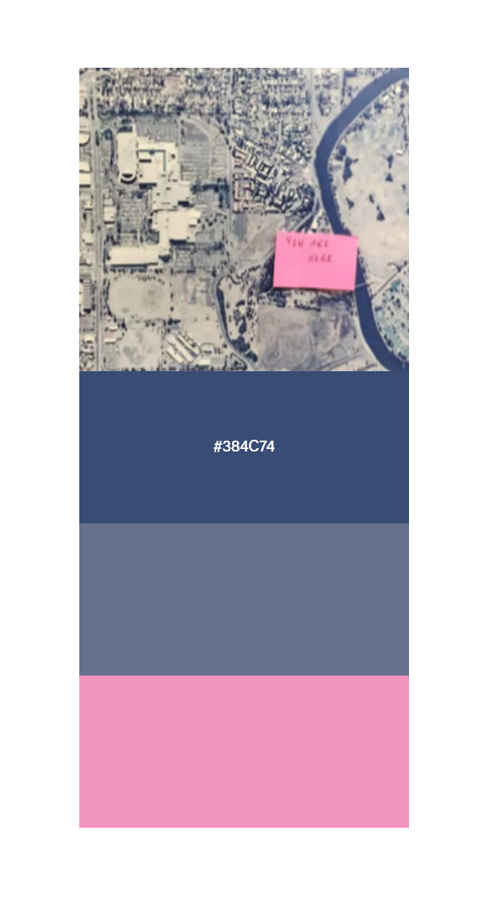
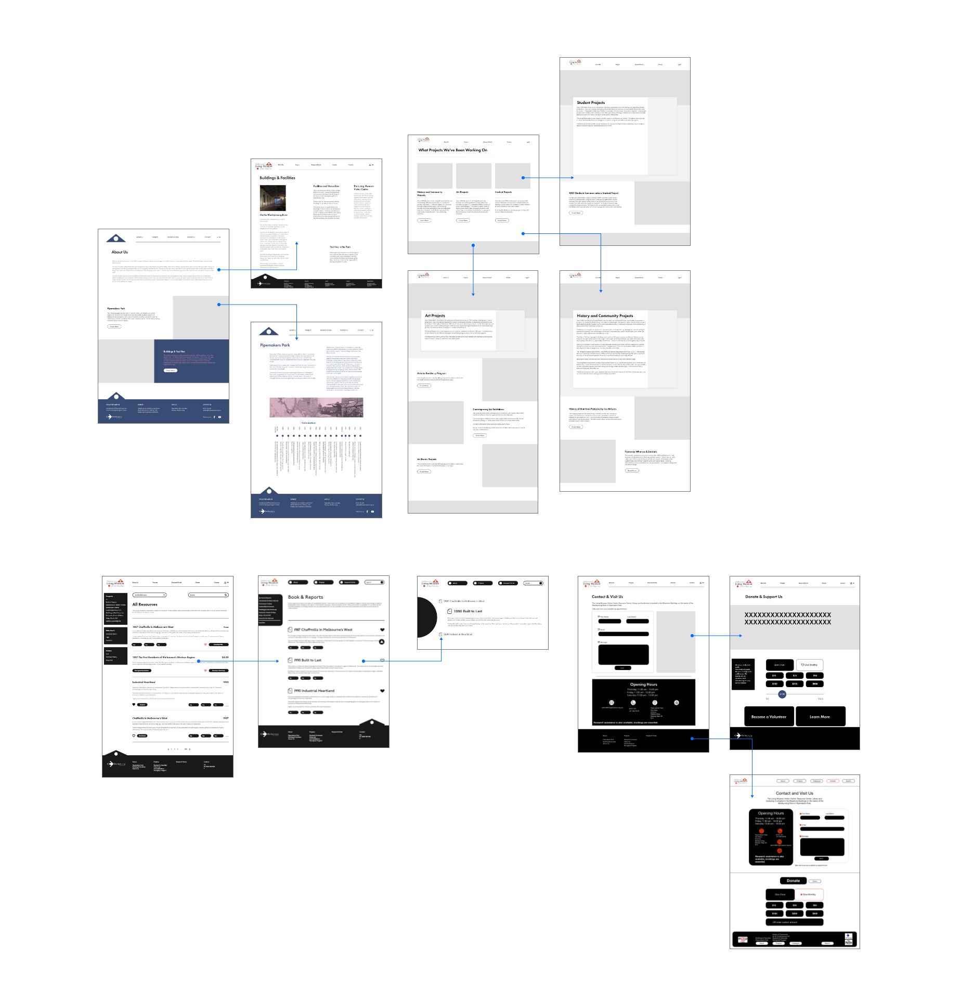
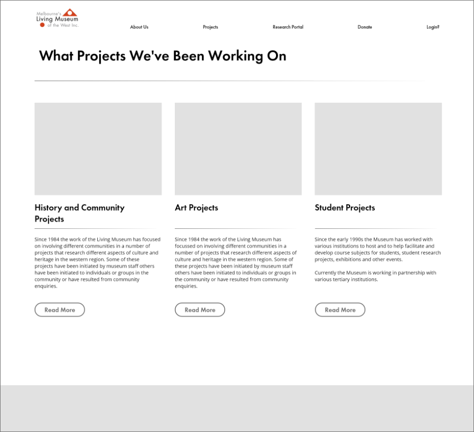
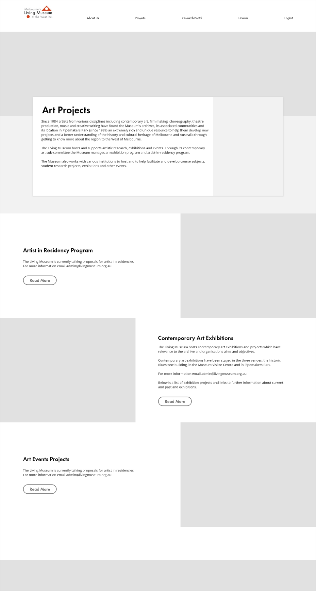
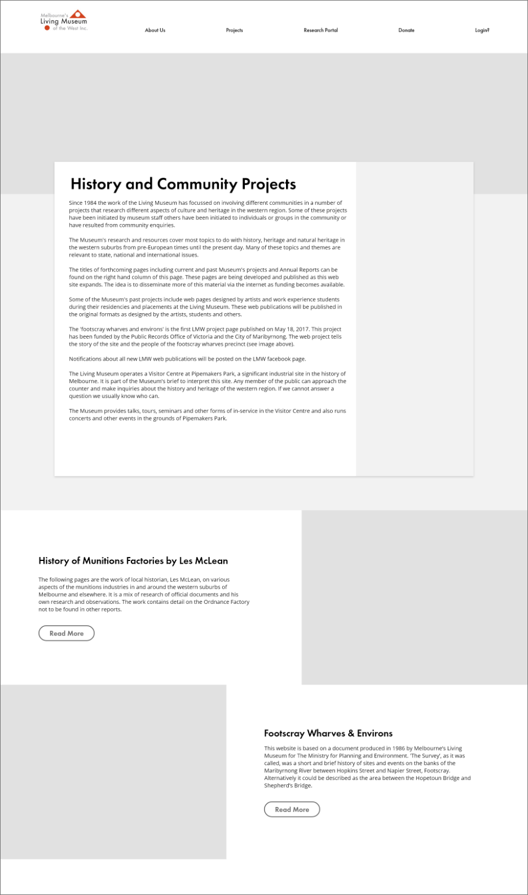
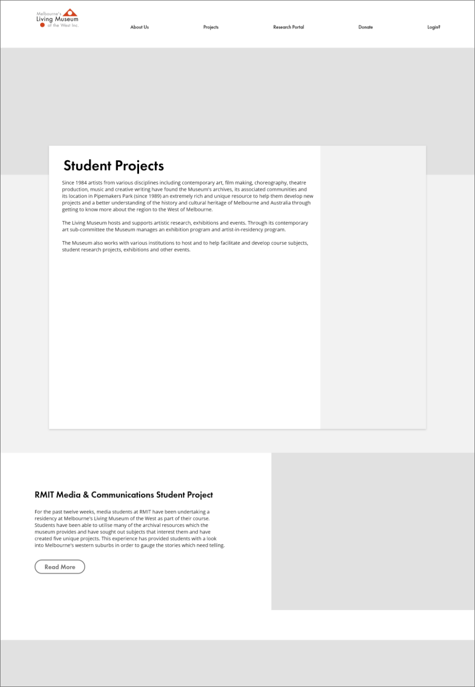

The Brief
The Living Museum had been hoping to reinvigorate and expand its subjective story collection in contemporary ways. Part of this goal is achieved through increasing their website accessibility. It is important the museum expresses its non-compartmentalised nature through a modern website framework as a contemporary reinvention. We were tasked to produce a branding and UX refresh of the museum's website in both desktop and mobile iterations.
Our Concept
During the research phase, we determined there were two main user categories:
Purposeful Users
People who come to the website with a goal in mind. Whether they are researchers, regular visitors or those wishing to lodge complaints, they all wish to access specific parts of the website quickly and purposefully.
Wanderers
People who enter the website by chance or for the first time. They wish to browse and explore what the museum is all about while picking up little bits of inspiration on the way. Perhaps they are looking for a fun weekend activity or wishing to procrastinate while learning something new.
Our Goals
- Look at heritage through a critical lens — the early celebratory tone around industrial and agricultural histories was, in retrospect, quite destructive to Indigenous environments.
- Bring in new perspectives.
- Increase accessibility.
My Role
I worked in a team of 5 to curate and give the museum's website a refresh. Overall, I worked to create reusable components and prototyped important interactivity functions such as the menu, navigation bar and footers.
Style Guide

- Colour scheme
- Swatched from the entrance map
- Headings — Futura PT Demi
- Used for consistency with the logo. Matches the contemporary reinvention style, in line with Bauhaus aesthetics.
- Body — Open Sans
- A humanist sans serif that is highly optimised for web and mobile interfaces. Its neutral, friendly appearance and high legibility fit the contemporary reinvention scheme. Open Sans also has ties to open-source data and wikis, matching the museum's values as a place to gain knowledge without borders.
- Type scale
- 60pt H1 · 36pt H2 · 20pt H3 · 20pt body
Card Sorting
By employing this user-centred design technique, I gathered valuable insights into how users naturally categorise and prioritise information.
Our group was presented with various content elements in the form of digital 'cards' and asked to categorise them based on their perceived relationships and importance. The results provided a clear understanding of users' mental models and preferences, enabling a well-structured and intuitive navigation system.
Homepage 4 cards
Acknowledgements
Event / exhibition / workshop schedule or calendar
Storytelling concept: objects users hover for more info
What’s on / news (quick view)
News page / blog
About 3 cards
Pipemakers Park
About us
Buildings + facilities
FAQ?
Digital library / catalogue 5 cards
Browsing section
Reference enquiry
Search function
“Cart”: favourites
Research
Login
Contact 3 cards
Possible footer
Enquiries (pop-up)
Digital donor wall
FAQ?
Projects 5 cards
- Student research and residency program
- Student work experience program
- Footscray wharves and environs
- Artist in residency program: timeline
- Contemporary art exhibition program: current exhibitions timeline
- Past arts events projects
- Local history
- Program
Projects timeline
Creating an initial system
Part of the challenge of reorganising such a large archive of information and pages is managing the information architecture and how it flows. These are some initial wireframes we made to understand the order of the user experience and flow of the customer journey.

Implementing a Grid System
We revisited the drawing board to find more efficient ways to display the content. Due to the astronomical amount of text within the museum website, it was imperative to break the verticality of the site. This helps reduce user frustration as users don't have to scroll so far to find their information.
- Using a grid system improves space efficiency and allows for less verticality.
- Having everything properly aligned increases usability, as elements are easy to track and find.
- Within each project, breaking up the page into blocks reduces huge chunks of text and allocates a visual to each text.



